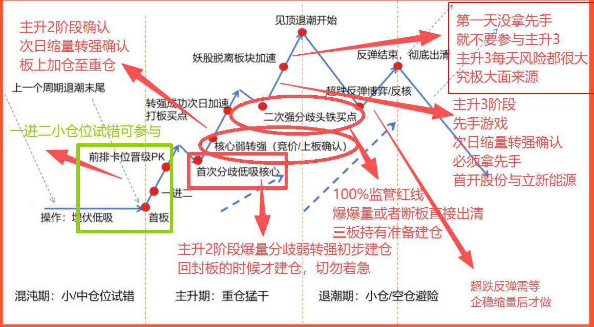

只做小仓位参与，前排卡位晋级才继续观察。
先看这张图
主升、混沌、退潮一张图

题材、唯一性与量能共同确认后，主要做三进四、四进五的板上或回封确认；缩量一字不买，加仓仍需当日条件成立。
到监管压力位后，爆量或断板直接出清，三板持有者提前准备建仓或离场计划。
第一天没拿先手就不要参与主升3；主升3每天风险都很大，是大面主要来源。
反弹结束要彻底出清，超跌反弹不能提前硬抢，必须等企稳缩量。
前置认知
短线投机的周期论
短线投机行情不是按月份平均出现，而是由一个能打高度、能走二波的总龙打开风偏后，才可能出现一段可做窗口；历史记录约1.5到2个月，不据此预设固定持续时间。
先找“开启行情的总龙”，再判断投机情绪是否已经打开；窗口没打开时，不要硬做月度均值，只做小仓试错和等待。
突破票量能特征
前四板基本是极致缩量一字板，五板开始才可能放量。
爱丽家居、恒尚节能、豫能控股这类负责打开连板空间的标的，早期依靠极强一致性快速抬高身位；到五板附近才进入放量换手和分歧检验。五板后的放量能否回封，是判断高度能否继续打开的关键。
不是每个月都有同等机会，而是某个题材总龙先打出高度，吸引风偏资金进场，后面才开始不断找借口接力。
旧周期观察记录总龙可能走出二波、延展题材窗口。趋势二波、断板反包与下一次五板以上连续涨停分开；具体候选仍服从18个月历史行情过滤，不能用“总龙二波”直接豁免。
没有题材、没有龙头继续打高度时，机会质量会明显下降，只适合小仓试错，重点保留下一波进攻能力。
华电辽能打开第一段投机窗口
华电辽能经历完整二波，带出从华电辽能到大唐发电这一段约一个半月到两个月的短线投机行情。
总龙：华电辽能
连板突破标的
豫能控股 7板
大唐发电退潮后的空窗
大唐发电前后，高位连续接力出现降温、修复和再恶化；该段按本模式适配度偏低记录。趋势、反包等仍有阶段机会，详见下方逐日证据，不将整个区间视为所有短线机会消失。
动作：少做、轻做、等新龙哈药股份开启第二段投机窗口
哈药股份二波打开风险偏好，后面立新能源、传智教育、百花医药、龙版传媒、一鸣食品、万邦德等不断接力。
总龙：哈药股份
连板突破标的
爱丽家居 10板
恒尚节能 8板
龙版传媒后情绪被压制
当连板高度被监管函、空间高度和情绪一致性压住，投机窗口就容易快速退潮，不能再按主升期思维硬做。
信号：监管压制 + 高度打不开
启动期
先看谁打高度
有爱丽家居、恒尚节能这类高度票不断吸引风偏资金时，投机生态才开始变好。
主升窗口
逐日验证窗口
总龙打开空间后，仍需逐日验证后续题材、换手梯队与次日溢价；不因处在预估窗口内就默认可以接力。
退潮空窗
不按月份硬做
大概率每个季度有一波，但时间不固定；窗口没来就防守，窗口来了要敢于聚焦。
市场适配
识别模式的启用、观察与暂停
当前主攻的是三进四、四进五的连续晋级模式。先识别市场正在奖励什么，再决定是否启用；中高位负反馈严重、封板后普遍没有可兑现溢价时，暂停该模式。五月底、六月中曾被记录为负反馈较重的阶段，具体日期仍待逐日复核。趋势、反包或低位轮动有机会，不代表中高位连续接力仍然适用。
开启观察：高度龙出现、连续四个及以上的一字缩量板向上打开空间，是个人经验中的重要信号；还要看到换手梯队晋级、题材扩散与次日溢价。负责打开空间的一字高标可以作为情绪观察对象，并不因此成为自己的买点。
| 状态 | 判断依据 | 模式动作 |
|---|---|---|
| 启用 | 换手梯队能够晋级；成功封板者有实际溢价；失败者亏损没有持续扩散。 | 仅执行已掌握、符合题材与个股条件的模式。 |
| 观察 | 高标失去带动作用；三进四、四进五受阻；单次大分歧后修复质量未定。 | 降低进攻意愿，检查当天是否恢复承接，以及次日参与者能否得到回报。 |
| 暂停 | 候选群体反复缺乏次日溢价，同时出现跨题材、跨层级负反馈和修复失败。 | 暂停中高位连板新介入；一只独立高标不足以恢复模式。 |
| 恢复观察 | 换手梯队与实际溢价重新出现，失败者的承接改善。 | 依据新证据重新评估，不仅凭又出现一只一字高标恢复进攻。 |
五项固定记录
- 成功者反馈：昨日封板者今天有没有可兑现溢价，不用次日最高价代替实际可实现的收益。
- 高度下方梯队：三进四、四进五是否连续受阻；最高板还在，也可能只有一字板、缺少可参与的换手接力。
- 修复有效性：老高标反包能否带动梯队，修复次日是否还有承接；修复交易再次亏损，比单次分歧提供更多警示。
- 失败者与扩散：昨日炸板、断板股是修复还是继续大跌；损失是否从单个竞争者扩展到不同题材、不同层级核心。
- 风格相对表现：指数、趋势或反包能修复，而连续晋级仍亏损，提示当前模式与主导风格不适配。
监管函、严重异动与高标杀跌属于需要核对日期的背景和反馈，不能仅凭同步发生认定单一因果。关闭信号不必是一根确定的K线；先判断自己的模式是否仍有回报。阈值与观察窗口列入待统一口径。
有来源的周期案例
大唐发电前后：接力降温、反复修复与风格分化
复盘范围明确为2026年5月。原有“5月中至7月初空窗”是阶段概括；下面的逐日资料说明，中间仍有修复与其他模式机会，不能据此断言全部短线机会同日关闭。
| 日期 | 当时可核对的表现 | 对模式的提示 |
|---|---|---|
| 5月14日 | 大唐发电六板后涨停开盘，炸板收跌2.31%；连板晋级率29.41%。华电辽能、华电能源放量收阴，众合科技、通达股份断板跌停。焦点复盘、财联社当日复盘 | 高标接力开始产生亏损，并向其他个股扩散。 |
| 5月15日 | 大唐反包至8天7板，但连板晋级率25%、首板进二板成功率仅5%，多只人气股连续跌停。当日连板分析 | 个别龙头修复，不能替代整体换手梯队和溢价改善。 |
| 5月19日 | 连板晋级率回到55.55%，利仁科技七连板；京能电力盘中大幅修复，尾盘仍未完成四进五。当日复盘 | 修复真实存在，但应检查不同题材与层级的修复质量。 |
| 5月19日·异动 | 上交所公开信息列示大唐发电十个交易日涨幅偏离累计达到100%的严重异常波动情形。交易所查询、公司公告（落款5月19日） | 此日期晚于5月14日走弱，不能倒推为此前降温的全部原因。 |
| 5月21日 | 连板晋级率20%；利仁科技止步八板，威龙股份晋级七板但巨量分歧，达实智能盘中天地板；大唐连续两日盘中修复未果。当日复盘 | 高标、中位和修复交易同时承压，暂停依据增强。 |
| 5月22日 | 115股涨停，连板晋级率回升但最高高度降至三板；利仁科技、威龙股份跌停，达实智能、合百集团、川润股份反包。当日复盘 | 整体有赚钱机会，与中高位连续晋级可参与，已经明显分开。 |
分析解释：前期大涨后的卖压、梯队修复不足、监管预期及科技容量等风格竞争，可能共同影响接力回报。这是基于资料的推断，未确认某一项是唯一原因，也没有把电力题材整体认定为逻辑已被证伪。全市场晋级率只能描述背景，不能直接代替自己的三进四、四进五样本收益。
核心总纲
有龙做龙，
无龙接力
主线明朗做龙头，混沌无龙做低位接力，退潮空仓。
全套体系只解决一个问题：在不同情绪周期里，用不同仓位做不同确定性，不把龙头主升、低位试错和退潮防守混在一起。
必须提醒
龙头的表象：总是可以超预期。
连续开盘以及开盘十分钟内超预期表现超过 2 次及以上，都是龙头预备了！
主升期
70%-100%
有龙做龙
混沌期
30%-50%
低位接力
退潮期
0%-20%
防守空仓
短线交易体系世界观
天时、地利、人和，与交易纪律
先用大情绪周期判断能不能做，再用天时、地利、人和判断值不值得做，最后用买点、仓位、卖点、失效条件和赔率把交易约束住。
总原则
先市场，再题材，再龙头，最后才是交易。
天时决定能不能做，地利决定做什么，人和决定做谁；买点和赔率决定现在能不能上，失效条件决定什么时候必须走。
混沌轻仓观察
发酵寻找核心
主升提高仓位
高潮防后排分化
高位震荡卖点前移
退潮降仓空仓
反弹验证持续性
冰点等待正反馈
再混沌重找新方向
短线基本手法
龙头、补涨、切换
当前能力边界：只做已经掌握的龙头手法；补涨与切换先观察、复盘和建立规则，不因盘中冲动临时使用。
01已掌握 · 主攻
龙头
围绕最高辨识度、最强带动性和唯一性核心交易，在主升阶段跟随确认后的市场总龙。
执行：当前实盘的核心手法02学习中 · 暂不重仓
补涨
龙头打开题材高度后，寻找同题材低位、属性相近且具备身位优势的跟随标的。
现阶段：只记录触发节点与次日反馈03学习中 · 暂不重仓
切换
旧核心走弱或周期转换时，资金从原方向切向新题材、新身位或更强核心的节奏交易。
现阶段：先确认旧方向退潮与新方向共振
天时
市场允许做什么
先判断能不能出手，再谈标的。
看情绪周期、空间高度、前高突破、监管压力与指数状态，确认市场处于混沌、主升还是退潮。
统计晋级、溢价、炸板和大面来源。涨停家数多但亏钱效应重，依然不能重仓。
确认资金正在奖励连板接力、趋势抱团、容量核心、20cm、低价股还是ETF。中高位负反馈严重且没有溢价时，暂停该模式，只使用已经掌握的匹配方法。
地利
方向有没有生长土壤
题材、板块和核心反馈缺一不可。
看题材性质、容量、梯队与持续性。健康题材应能经历高潮、分化与回流，而非只走一日一致。
最晚四板前看见强板块效应；结合涨停数量、梯队、持续性和环境相对排名。缺少绝对强题材时可参考当天前三，不能解除市场暂停条件。
看板块内最高标、容量核心与人气股是否获得竞价溢价、承接和回封。辨识度个股持续正反馈，才说明资金真正认可该方向。
人和
最终应该做谁
选择被市场共同确认的核心。
比较身位、主动性、卡位关系、带动性与抗跌性，选择竞争结束后仍能晋级的唯一出口。
观察竞价、开盘十分钟、换手、封单和分歧承接，确认强度来自真实资金，而非脆弱一致。
把实际表现与市场原有预期比较。弱转强、连续超预期和分歧后主动回封，才值得提高仓位。
- 当前龙头模式主要做三进四、四进五的转强或回封确认；首二板试错另属其他模式，不混用。
- 错过正确买点可以接受，不用错误买点弥补错过。
- 极好 8-10 成，中等偏好 6-8 成，一般 4-5 成。
- 环境偏差 3 成以下，退潮或无模式时空仓。
- 情绪中等时卖点前移，强势主升才允许格局。
- 持仓进入风险阶段后，失控爆量、炸板或断板首次出现先按纪律减仓；与三至五板预期中的放量承接分开判断。
- 不跟板块回流、被同身位卡掉或唯一性被替代。
- 题材强度低于假设，立即按计划退出，不补错误。
- 同时评估胜率、上涨空间、下杀风险和计划仓位。
- 上方空间小、下方风险大，即使可能涨也不参与。
龙头主升前置判断
三板起观察，唯一性决定确认时点
强板块效应＋唯一身位的抱团高标＋合理量能节奏＋中位介入，追求高盈亏比。主要做三进四、四进五；板位提供观察区间，题材、身份和量能共同决定介入，不能预设晋级到七板。
唯一性与买点分别确认
三板已形成唯一性，且强题材与转强确认成立，可前置三进四；三进四仍在PK，则等待结果明确，次日五板板上确认。
操作：主升2开始才建仓，确认转强再加仓，不提前重仓赌龙。只重点做主升2
主升2通常是4-7板，目标是冲击100%的监管红线；这是仓位效率和确定性最匹配的阶段。
操作：主升2开始建仓，主升2结束离场，不把仓位拖进主升3高位博弈。龙头还要看高标抱团竞争
三板及以上若同时出现两到三个有辨识度、带题材性的高标，不能只看单个票，要比较谁更能成为市场抱团的唯一出口。
操作：同池比较但不分仓猜胜负；同身位未决时不介入，竞价更强或先上板不等于最终胜出。龙头诞生的必要前提
龙头必须诞生于强板块效应之下
板块效应首先看涨停个股数量，但强弱标准不是固定数字，必须结合当时全市场的短线投机情绪动态判断。
当前时间与地位要求
最晚四板 · 相对前三
结合当时市场强度；排名领先不替代持续性、核心承接及模式适配。
旧观察以8家作为弱情绪中的数量参考；本次加入题材前三及持续性，不将数量单独视为确认。
强市中8家可能不突出，旧观察参考12—15家；仍需比较广度、成交占比、题材梯队与持续性。
同样的涨停家数，在弱市可能是主线，在强市可能只是一般轮动。必须同时比较全市场涨停总数、题材梯队和持续性。
定龙顺序
先确认板块形成强赚钱效应，再从板块内部寻找最高辨识度和唯一性的龙头。
地利·持续性
四板前建立板块效应，介入时继续检验支持
时间门槛：强板块效应必须在龙头四板及之前表现出来，最晚是第四板。强度门槛：逻辑正、涨停家数多、跟随明确、持续性强；结合当时环境比较。没有特别强的题材时，可将当天题材强度前三名纳入考虑。
题材排名衡量相对优势，不能解除中高位普遍无溢价时的暂停条件；四板前强过，也不能替代买入当日的持续性检查。此前“弱市8家、强市12—15家”的数字保留作历史观察参照，不再作为覆盖市场环境和题材排名的绝对底线。
先区分竞争淘汰与板块衰退
直接竞争者失败，其他核心股稳定：题材持续性仍有支持，不能仅凭一个对手倒下认定整条线衰退。多个不同层级核心一起失去承接：持续性明显减弱，应检查负反馈是否从中位扩散到低位和容量代表。
后排跌停，或龙头开盘上冲时其他辨识度股下杀深水、迟迟不回到水上，属于“吹哨信号”。买入要争取次日溢价，不能因为龙头当天最终封板就忽略其他层级失去承接。
| 观察点 | 更支持修复 | 更值得警惕 |
|---|---|---|
| 龙头上冲前后 | 核心停止创新低、跌幅收窄。 | 核心继续创新低。 |
| 板块参与范围 | 跟随上涨的个股增加。 | 只剩高标独自上涨。 |
| 分歧后承接 | 核心收复分时均价，修复能够维持。 | 反抽很快回落，跌停个股增加。 |
| 昨日涨停梯队 | 多个层级仍有承接。 | 中位与低位同时出现明显负反馈。 |
观察变化过程：从−8%修复到−2%仍在水下，但方向改善；从+3%下跌到+0.2%仍在水上，却在走弱。水上水下只是一个参考。盘前固定同催化的核心换手股、容量代表和昨日涨停梯队，避免事后挑选弱股证明结论；修复观察时点仍需预先定义。
三房巷：唯一五板高标与题材持续性背离
按个人复盘，化工从三房巷首板起经历中等强度启动 → 续强 → 分化 → 分歧 → 分歧大延续。中位龙头曾领涨并带动其他个股冲击涨停，但题材也接受逻辑与持续性检验。
三房巷成为市场唯一五板高标、具备抱团辨识度时，题材已经连续三天分化分歧、板块效应消退；之后冲击六板失败并走出A杀。要研究的是三进四、四进五当时能否识别风险，不能以最终下跌倒推当时结论已确定。
外部：化工分歧时电力以更强强度启动，化工分歧大延续时电力再次续强。内部：三房巷最终上板，但前一日同样涨停的中位三板赤天化与首板情绪股“璐化科技”下杀深水，未见回到水上的修复。不同层级同时失去承接，是本体系回避硬上高标的依据。
“璐化科技”保留原述，名称待核对。案例行情和逻辑证伪的独立依据尚未逐项核验；价格走弱不自动等于题材逻辑被证伪。
风范股份：四板前没有建立相对领先的板块效应
按个人复盘，风范股份四板及之前未出现符合要求的强板块效应，题材PK持续处于下风，未跻身主线前三的考虑范围。因此即使个股继续走高，也不属于该套龙头模式的候选。具体日期与题材排名待核对。
地利·外部竞争
比较题材持续性，防止原方向被卡位
市场同时运行多个题材。龙头打高度、延展持续性时，要观察是否出现逻辑更正、强度更超预期、板块效应和持续性更强的新题材。个人观察标准是至少连续两天高强度，而非一天强、一天弱。
重点警惕：新题材持续增强，同时旧题材成交活跃度、上涨广度和核心修复能力持续下降。
比较两个题材各自成交额占全市场的比例、各自昨日涨停股的当日表现、涨停家数与梯队修复。新题材强而旧题材也扩张，可能是共同活跃；新强旧弱同时发生，才更贴近卡位观察。单日涨停数量不能代替连续比较。
金健米业：农业被医药补涨题材卡位后的走法变化
按个人复盘，金健米业所在农业被医药补涨题材卡位，后续转向趋势龙走法，未继续按连板龙方式推进。个股仍有强势表现，与适合连续晋级模式，是两个判断。这个案例不推出所有被卡位龙头都会转趋势，也不自动形成趋势模式买点。
龙头个股量能节奏
五板及之前完成放量，跟踪第三个量能窗口
个人经验强调五板及之前完成必要放量，并关注第三个起量／半放量板。旧版折算单位与本次原始次数分开记录，不能机械相加；下列既有样本统计不等于每只龙头都必然重复。
经验观察·待统一口径
半放量 × 3
2-3 个起量 ≈ 1 个半放量
1-3 个半放量 ≈ 1 个全放量以下为原有9个周期样本的描述统计，终局项为其中6个样本；不是全市场概率，也不证明“第三个即最后买点”。
筹码交换开始增加，但分歧强度尚未达到半放量级别；通常需要连续 2-3 次起量，才可视作一次有效半放量。
能完成有效换手，又没有把筹码一次性交换到失控，是五板前最健康的基础单位。
通常对应关键分歧、换龙或弱转强。全放量本身不是确认买点，次日缩量或降档转强可继续检验承接；当日一字开板后的放量回封也须结合共同前提判断，不能仅凭缩量认定筹码锁住。
放巨量意味着分歧显著；如果最终无法回封、无法重新一致，次日很容易延续分歧，优先按风险信号处理。
2-4 板首次有效换手
第一次有效爆量通常落在二至四板，对应换龙、题材分化回封或持续性确认。
爆量后观察转强确认
爆量后成交收缩、价格仍保持强势，可作为承接与转强的观察，不能仅凭缩量认定抛压已经释放完毕。
放量、缩量、再放量
第一次放量解决分歧，缩量加速建立身位；第二次放量若仍能早封，周期才有继续延伸的条件。
末端爆量看封板结果
末封拖到午后、反复炸板或无法封住，往往进入风险段；高位天量不回封不再解释为健康换手。
执行落点
爆量弱转强是前置信号，次日缩量高开后的转强是重点确认，一字加速本身不作为买点。
查看完整龙头周期与量能样本
四板前换手不足时，五板全放量可能是“补量”，必须同时观察唯一性、强承接和题材支持，率先上板不能替代竞争结果；高位失控爆量炸板优先按减仓纪律处理。
量能·过程与次数
把题材节奏、量能过程与剩余介入窗口放在一起
回流可以对应缩量转强，也可以提供放量承接
理想情形是龙头缩量转强与题材回流共振，体现抗跌与领涨性；实际也可能借题材回流放量甚至爆量，利用该节点承接消化筹码释放。两种过程都要检查题材和价格反馈，不能预设回流日必须缩量。
当前体系要求五板及之前完成必要放量：位置越高，获利盘释放压力通常越需要关注，高位首次大分歧可能更难承接。放量应结合价格能否维持、回落是否收窄、重新上攻是否有效；盘中用同时间累计成交比较，不能将开盘量直接与昨日全天量相比。
| 累计观察 | 个人经验判断 | 参考案例与行动 |
|---|---|---|
| 已经有三个起量／半放量板 | 后续可能加速，五至六板不再给合适机会；把第三个符合条件的板列为五板及之前的重要、可能最后的介入窗口。 | 百花医药、津药药业；重视缩量转强确认。华天酒店也被用于强调第三个半放量板。 |
| 冲击五板前仅两个放量板 | 五板可能补量，再提供承接确认机会。 | 传智教育；观察补量时的承接、题材回流及转强，不能仅凭少一次计数就认定必有买点。 |
计数口径分开：本次经验原话为“每个龙头至少三个起量或者半放量板”；旧版还有“2—3个起量折算1个半放量、1—3个半放量折算1个全放量”的观察口径。原始出现次数与折算量能单位不是同一统计，暂不混算，更不能将两者拼成机械下单规则。“第三个就是最后买点”尚待统一样本验证。
小成交额龙头与较早确认
百花医药、传智教育、津药药业被记录为小成交额龙头案例；“半放量”情况下成交额不超过5亿元，五至六板可能缺少上车机会。当三板唯一性、强板块效应与持续性已成立，完成“爆量弱转强 → 转强确认”两个连续动作时，在三进四的确认节点按计划及时执行，不再机械等待五板。金额指盘中还是全天、半放量比较基准尚待统一，成交额不能直接代替流通市值。
这是体系内对较早确认机会的优先级判断。担心买不到不构成独立买入条件；错过之后不得把极致缩量一字板改成买点。上述案例行情与次数仍按个人复盘口径保留。
观察与预备
这一段以发现题材、观察高度和辨识度为主，不是重仓舒适区，避免在未定龙前押错方向。
建仓与加仓
爆量弱转强是量能过程信号；题材与唯一性确认后，主要在三进四、四进五的转强确认节点建仓。高开确认不等于极致缩量顶一字。
高位监管博弈
主升3是冲击200%的异动阶段，更多是监管和情绪极限博弈；体系上以主升2结束离场为主。
建仓与加仓
- 爆量弱转强后，还要检查题材、唯一性及转强确认；只在三进四、四进五的合格节点考虑第一笔。
- 第一笔一般控制在5成仓以下，先让市场给出确认。
- 旧仓位框架允许确认后评估加至8成仓及以上；必须重新检查环境、题材、唯一性与可参与的转强，极致缩量一字不触发加仓。
持有与减仓
- 主升2是核心持有区，主升2结束就准备离场。
- 持有进入风险阶段，失控爆量、反复炸板或断板时按既有纪律减仓；不将五板前预期换手与终局风险混同。
- 第一次出现风险信号先减半仓，不把利润交给高位不确定性。
票池自选
二板及以上，全部进池做六项分析
二板及以上可进入背景票池做结构化分析；当前龙头模式从三板及以上开始重点观察并考虑介入。背景收集与买入资格分开。
入池底线
所有二板及以上个股，都要完成量价、筹码、题材、大盘、竞争和投机生态分析。
重点个股选择：二板及以上，股价和市值都很合适的，才进入核心自选。
量价分析
看涨停质量、成交量变化、分时承接、封单强弱和是否爆量失控。
筹码分析
看前期套牢盘、获利盘、换手是否充分，以及上方压力是否容易释放。
题材梯度与容量
看题材内一板、二板、中高位梯队是否完整，板块容量能否承接资金继续进攻。
大盘环境共振
判断是下跌波段的抱团行情，还是上升阶段的大盘共振趋势行情。
题材之间竞争
比较主线、支线、新题材和老题材的资金强弱，避免被竞争题材抽血。
短线投机生态
观察连板生态环境：高度、晋级率、炸板率、亏钱效应和资金接力意愿。
人和·身份与时间
唯一性何时形成，决定三进四还是四进五
龙头判断的核心是身位性：至少题材内唯一，最好跨题材具备全市场唯一身位，并有高标抱团辨识度。以唯一性提高胜率、盈亏比和次日溢价概率，是这套规则的目标，三项效果分别验证。三板及以上才进入本模式重点观察与介入判断；二板基础票池用于背景分析，不是二板买入许可。
| 三板阶段的状态 | 处理方式 | 确认边界 |
|---|---|---|
| 仍有同身位PK | 三进四竞争当天不抢先；四板结果确立后，次日冲击五板才考虑介入。 | 只接受下一板的板上确认，不凭竞价强、开盘强或率先上板预判胜出。 |
| 三板已形成唯一性 | 强板块效应与持续性已在，且完成“爆量弱转强 → 转强确认”，可前置到三进四。 | 前置的是相对等待五板的时点，不能取消身份、题材或量能确认。 |
| 条件至四板才齐备 | 四进五观察板上确认，圣阳股份作为个人复盘参考。 | 五板本身不保证晋级；明确的是执行条件，不是收益。 |
同板或近板的多个高标进入同一观察名单，逐日比较题材、筹码、承接及抱团地位；不再执行“两个都做、各半仓后再择强”的旧方案。传智教育与一鸣食品的AI应用／消费竞争仍保留为比较题材归属的研究案例，未确认前不因分仓而放宽唯一性门槛。
华电能源／绿发电力，与龙版传媒／大晟文化／欢瑞世纪
华电辽能周期中的竞争：华电能源有趋势龙走法，与三板同身位的绿发电力PK；两者均有放量、缩量过程，不同于中南文化的一字走法。站在当时两者都有走成龙头的可能，不能事后认定胜负已定。
三进四时绿发电力开盘更强、率先上板，却炸板大幅下杀，次日接近跌停；华电能源开盘先下杀深水，待绿发电力走弱后上板。先表态、先上板不等于最终胜出。华电能源胜出后后续晋级仍失败，原述未明确是触板前失败还是回封后再次炸板。
三个三连板的竞争：龙版传媒、大晟文化、欢瑞世纪中，预期最低的龙版传媒胜出晋级四板；其他竞价、开盘较强者炸板下杀，缺乏承接，次日极端负反馈。按本规则，应在PK结果明确后等待次日五板板上确认；龙版传媒后续连板成功，与华电能源失败形成对照。
以上按个人复盘保存，尚未逐笔核验。“大声文化”已按后续订正统一为“大晟文化”。要进一步定义：对手暂时炸板与身位竞争真正结束如何区分。
今日选择哪个战法
先判环境，再分题材，最后选动作
每天先回答四个问题：情绪在哪个阶段、题材属于情绪连板还是趋势主升、有没有真龙、明天是否有足够溢价。
01
七维确认，真龙出现
题材持续发酵，市场有公认高位人气总龙，资金聚焦，板块内梯队清晰。真龙必须用七维交叉确认。
第一性身位最靠前
领涨性带动板块
主动性主动走强
抗跌性分歧抗压
价值性逻辑支撑
市场性资金公认
唯一性题材内、题材之间以及最高标抱团唯一出口
- 七维定龙通过：第一性、领涨性、主动性、抗跌性、价值性、市场性、唯一性。
- 三板及以上若有多个高标竞争，先比较身位、题材强度、筹码结构和抱团辨识度。
- 题材类型明确：情绪题材看连板高度，趋势题材看抗跌与修复。
- 竞价未过热，竞昨比低于30%，高开不超过纪律边界。
- 弱转强优质机会多出现在逆势抗跌分歧日，次日确认转强优先。
02
没有总龙，情绪回暖
市场混沌，题材散乱，但连续冰点后出现新题材共振，或板块分歧后留下活口。
- 只做低位核心试错，单票仓位不到50%，总仓位小于80%。
- 优先竞价强度前三、量能在线、大长腿实体阳线。
- 只盯板块前排，不做第三名及以后的后排杂毛。
03
高潮次日或退潮信号
板块一致高潮、竞价崩盘、涨停指数走弱、题材电风扇轮动，任何一个都足够让交易降速。
- 高潮次日不接力，只减仓、清仓，不新开仓。
- 分歧退潮期优先空仓，闲置资金可做逆回购。
- 周回撤触及-5%，总仓降至20%以下。
共振概念
两类节点最容易顶出新连板
连板共振大盘节点
涨停表现本身就是强势表现。当个股涨停共振于大盘回暖、强回流或整体强势表现时，容易跟随大盘强势继续连板涨停。
参考案例：8.4 二板的宝鼎科技（PCB题材）。龙头共振周期节点
上一个节点的龙头断板结束时，通常会有一批新的涨停个股出现，资金容易高低切承接，把新的前排顶出来。
核心理解：资金永不眠，老龙断板时要观察新涨停梯队。
当前选中
有龙：聚焦真龙，做主升浪
只在主线明确、真龙已被七维确认时提高仓位。第一性看身位，唯一性看题材内、题材之间以及最高标抱团的唯一出口；主要做三进四、四进五；未决PK不参与，题材与量能共同确认后再执行。
交易前提
情绪周期六阶段
所有买点都必须服从周期。逆周期没有英雄主义，只有回撤。
主线清晰、龙头出现，仓位向核心龙头集中。
无高位总龙，只做低位核心试错，失败要快。
优先空仓防守，闲置资金可做逆回购。
- 1冰点亏钱效应极致，情绪最低点
- 2回暖低位试错资金回流
- 3发酵题材扩散，赚钱效应提升
- 4高潮一致看多，后续不接力
- 5分歧分歧加大，高低切换
- 6退潮资金撤退，空仓防守
高潮日判定
满足2条以上即按高潮处理
数量
主线板块涨停家数不少于8家，且以核心标的为主。
量能
板块成交量较前日放量50%以上，占两市成交量不少于8%。
人气
龙虎榜前20名中该板块占比不少于40%，资金认可度高。
辅助
板块涨幅中位数不少于5%，炸板率不高于5%。
两大战法
同一套周期，两个不同动作
龙头战法解决“确定性主升”，低位接力解决“无龙时的轻仓试错”。两者不交叉。
有龙主升期
中位龙头博弈
- 适用环境
- 模式环境适配，题材最晚四板展现强板块效应且介入时仍有持续性；从三板起观察，按唯一性形成时点选择三进四或四进五。
- 定龙标准
- 第一性（身位最靠前）、领涨性、主动性、抗跌性、价值性、市场性、唯一性（题材内、题材之间以及最高标抱团的唯一出口）七维同时观察，杜绝伪龙头。
- 题材区分
- 情绪短线题材看连板高度和卡位；趋势题材看分歧大小、抗跌能力、趋势延续性与反包力度。
- 买点
- 强题材、唯一性及量能确认齐备后，主要在三进四、四进五板上或回封确认；第一笔沿用仓位纪律，后续确认不自动触发加仓。
- 切换
- 只在目标标的成功上板或强势扛住分歧时切换；目标必须是板块第一梯队最强标的。
- 卖点
- 主升2结束准备离场；高位失控爆量、反复炸板或断板，第一次风险信号按既有规则减仓；五板前合理放量另看承接。
无龙混沌期
低位1进2接力
- 适用环境
- 市场无高位总龙，题材散乱，情绪反复震荡，处于混沌试错阶段。
- 允许场景
- 连续冰点后新题材共振、分歧活口反包、独立硬逻辑趋势股回踩。
- 进场标准
- 竞价强度前三、量能在线、首板大长腿实体阳线，且明日溢价概率足够高。
- 退出机制
- 次日水下低开或无承接直接走；高开下杀按+1%和+5%节点止盈；晋级2板后若无龙头属性减半；三板依规减半；四板分批减仓离场。
2板无龙头属性：减半
3板：依规减半
4板：分批离场
细分手册
打开《A股一进二战法手册》龙头共振节奏
看板块分歧与个股抗跌，不只看连板数字
下列为一种历史节奏示意，不是逐板必经路径。题材回流也可能对应龙头爆量，买点仍服从唯一性、量能确认及板块动态反馈。
板块分歧震荡，个股逆势抗跌。
板块资金回流，个股领涨或跟风封板，龙头地位基本确立。
板块再度分歧，个股维持抗跌走势。
板块行情修复，个股受情绪推动上板，进入第二道核心门槛。
板块分歧洗盘，个股走势保持稳健。
板块行情迎来高潮，个股顺势加速封板。
| 维度 | 有龙主升期：中位龙头博弈 | 无龙混沌期：低位1进2接力 |
|---|---|---|
| 适用环境 | 主线题材明确，题材持续发酵，市场走出公认高位人气总龙。 | 市场无高位总龙，题材散乱，情绪反复震荡，处于混沌试错阶段。 |
| 入场条件 | 三板早有唯一性可三进四确认；三进四仍PK则结果明确后等待五板板上确认。极致一字不买，放量强承接与回封需共同前提。 | 只做三种允许场景；竞价强度前三；量能在线；板块前排、大长腿实体阳线优先。 |
| 仓位建议 | 第一笔一般5成仓以下；共同条件持续成立且出现可参与确认后，沿用原仓位框架评估加至8成仓及以上；高位出现失控爆量、反复炸板或断板按风险纪律先减半。 | 一进二试错期单票仓位不到50%，总仓位小于80%；只做前排，不集中后排杂毛。 |
| 离场规则 | 高位爆量长上影、放量十字星、放量断板大阴线、封死跌停，触发必走。 | 次日水下低开或无承接直接走；2板无龙头属性减半；三板依规减半；四板分批减仓离场。 |
不可逾越
全局风控纪律
这部分不用于讨论，只用于执行。触发条件就离场，不能用临盘情绪重新解释。
普通标的≤-3%
触及无条件离场。龙头可放宽至≤-4%，但必须结合分时承接，无承接不犹豫。
低位5%到8%，龙头8%到12%
低位接力不恋战，龙头可适度格局，但必须随强弱变化抬升保护线。
单周总回撤≤-5%
触及后仓位降至20%以下，停止新交易，先复盘再恢复。
不做三无杂毛
无题材、无人气、无资金关注的标的直接剔除；退潮期不强行博弈。
风控·筛选
入场前排除项与历史行情过滤
- 环境不适配：中高位负反馈严重、成功者也普遍无溢价，暂停连板模式。
- 身份未确认：三进四仍有同身位PK，不以竞价更强或率先封板替代竞争结果。
- 题材支持不足：四板及之前没有强板块效应，或买入当日多层级核心失去承接、被持续更强的新题材压制。
- 量能未完成：连续三个缩量一字板，到五板及之前仍不符合量能关系、缺少必要放量，原则上不参与。原述“万不得已”的例外尚未定义，不另开豁免入口。
- 历史大行情：过去一年半（约18个月）走过一波大行情、该波在“五连板以内”的龙头，个人判断其再走“五板以上”大二波较难，纳入经验排除项。原述“五连板以内”不改成“以上”；大行情、二波及五板以上是否含五板的统计定义待确认。
中南文化：五连一字与缺少必要换手的风险
个人复盘以五连一字板中南文化为例：连续缩量一字，未在五板及之前完成所需量能节奏时，即使有身位也不替代换手条件。担心的是负反馈形成A杀后的潜在亏损与不划算的盈亏比。
“一年半历史行情”和“三个量能板”等经验过滤需要与无此历史的候选对比，并保留成功反例；仅发现大二波少，不能证明这一过滤有额外区分能力。原文“赔率太高”按潜在亏损过大、风险收益不划算记录。
风控·持仓变化
买入成立之后，条件仍可能改变
买前筛选与持仓应对分别评价：买入是否符合当时可见的条件，新增不利信息出现后是否按预案处理。不能把次日才出现的证据倒用成前一天必然应当回避的理由。
金螳螂：五板符合条件，六板阶段出现新负反馈
按个人复盘，金螳螂五板有强板块效应和持续性，也没有明显竞争题材卡位，现有买前条件未将其排除；冲击六板当天题材逻辑出现问题、后排掉队、情绪转弱，需要根据当天信息临盘反应。
“没办法避免”保留为个人案例判断，尚未核对是否存在更早可识别信号。记录逻辑证伪的事实依据、盘口扩散顺序及实际可执行机会，不把所有回撤都归为选股错误。本例未新增具体卖出价或阈值，继续服从现有卖点、仓位与条件单纪律。
三至五板预期中的放量承接，与高位失控爆量、反复炸板和断板，是不同情形。允许观察回封买点，不等于取消已有持仓的减仓或退出要求；买入信号与风险信号必须按阶段、题材支持和承接状态区分。
执行动作
买卖操作
买卖不是临盘感觉，是每个持仓票都必须提前设置、动态调整、按分时强弱执行的动作纪律。
买点·两类时间分支
三进四、四进五：确认身份后，再确认买点
共同前提：模式启用、题材最晚四板已展现强板块效应且当下仍有持续性、唯一身位已形成、量能合理、核心承接未触发回避。达到某个板位或某次量能计数，均不单独构成交易。
| 形态／过程 | 当前规则 | 与原有条件的关系 |
|---|---|---|
| 高开后的缩量转强确认 | 重点观察爆量弱转强之后的确认；唯一性早形成可三进四介入。 | 高开是观察信号，不把任意高开当成买点。高开确认与板上执行的具体衔接尚待量化；未统一前沿用已明确的板上确认。 |
| 极致缩量一字加速 | 本身不买；板块分化后前排聚焦一字，可以作为强势表现。 | 强势表现不自动等于可参与的好买点。 |
| 一字加速次日放量强承接 | 检查放量、承接与重新转强，再判断是否仍在三进四／四进五的主要窗口内。 | 不因次日开板就取消题材、唯一性及风险收益检查。 |
| 一字加速当日炸板下杀后回封 | 观察一致加速 → 开板分歧 → 放量承接 → 回封转强；符合条件时可作为回封确认节点。 | 机会不必机械等到次日。下杀本身不是买点，未确认前不抢。 |
华天酒店：三进四一字加速、第三个半放量板与后续承接
按个人复盘，华天酒店三进四是极致缩量一字加速，不属于本模式买点；缩量转强确认指高开后的确认，而非无换手的一字一致。板块分化后前排聚焦一字并无须否定，但更关注一字之后的放量强承接。
案例同时被用于强调“已经有三个半放量板，第三个是五板及之前最后的重要进场点”。第三个半放量板和一字加速次日的放量承接是否为同一交易日，需按日序核对；这项经验不能成为顶一字或追逐所谓最后机会的理由。
回封反映什么，不能直接证明什么
回封的交易解释是分歧被承接、量能节奏符合预期、获利盘与抛压经过交换，也表现出资金承接力度。可观察的是开板、成交增加、价格修复和回封；“抛压全部释放”“主力实力确定”不能仅凭一次回封证实。回封后仍可能再次开板，要结合板块反馈与既有持仓纪律。
圣阳股份：作为五板关键条件齐备后明确执行的个人案例保留，具体交易日和量价路径尚待逐项核验。所谓“确定性买入”指规则确认后的执行明确，不是收益保证。
盯盘才能上重仓
外出或无法盯盘时，判断不完整，最容易出现随手单，这是回撤放大的亏损来源之一。
执行：只有电脑盯盘时才允许上重仓（40%以上）；手机盯盘只能4成以下，无法冷静全面思考就不要乱上仓位博弈。动态跌停条件单
每个持仓票都必须根据分时变化程度设置动态条件单，结合关键支撑位调整，目标是不亏损离场。
执行：以必须成交为第一优先，必要时设置跌停单，防止快速跳水时无法成交。金字塔加减仓
分时变化时，买卖采用金字塔原则：越买越高，越卖越低。只有价格和强度配合，才继续买卖。
若越买不越高，停止加仓；若越卖越不低，停止利润回吐，静观其变。停止继续犯错
犯错误的时候，唯一能做的就是停止继续犯错。错误加仓、错误格局、条件单缺失，都先停下来。
执行：停止沉没成本，先保护仓位和利润，再重新判断。梯队自选筛选
必须为某一题材建立梯队票池，持续观察一系列题材票变化，用板块梯队反推个股与题材走势。
执行：用梯队强弱做充分判断，不只看单票分时。风险核心
仓位规则一张表
仓位不是胆量，是市场确定性的函数。总仓默认锁定60%到80%，保留20%机动防御仓，只有环境适配、题材与唯一性及买点共同确认后才评估向核心集中；身份确认不等于收益保证。
场景
总仓位
单票
动作
账户常态
60%-80%
预留20%
固定机动防御仓，不满仓，不单票赌行情。
情绪主升期
70%-100%许可区间
真龙5到8成
主线明确且真龙确认后，向核心龙头集中，缩减低位试错。
一进二试错期
小于80%
单票不到50%
只做板块前排试错，控制单票风险，不满仓赌晋级。
三至五板定龙期
可逐步提高
慢慢加至80%
去弱留强，不再关注杂毛后排票，只向已确认的核心龙头集中。
混沌期
30%-50%
1到2成
不超过3只，分散失败风险。
退潮
0到20%
原则空仓
不合格机会直接放弃。
闭环
复盘体系：做一天，看五天
每一笔交易都用五天视角校验：前天、昨天看轮动节奏，今天看具体表现，明天看临盘操作，后天看溢价情况。
看轮动节奏
回看题材强弱、资金流向、板块切换和前排更替，判断市场是在延续、轮动还是退潮。
看具体表现
观察大盘量能、市场情绪、题材强弱、个股梯队和目标标的承接。
看临盘操作
盘前写好标的、仓位、买点、止损和止盈；盘中按竞价、开盘和承接执行。
看溢价情况
验证明日操作后的次日溢价。溢价概率不足70%，直接放弃该笔交易。
交割单复盘节奏
每周、每月、每季、每年都要复盘
逐笔核对盈亏逻辑，修正仓位、预判和纪律漏洞。
统计战法胜率、回撤来源和最稳定的盈利形态。
复查市场风格变化，调整题材偏好、买点和仓位模型。
沉淀年度交易画像，保留有效系统，淘汰低质量动作。
复盘·用户已采纳的分层比较
同一批候选逐层验证，检查过滤的收益与代价
所有候选均使用当时可见信息。固定题材归属、候选池、入场信号、退出规则、统计窗口及可成交假设，然后比较：
| 层级 | 条件 | 需要比较的结果 |
|---|---|---|
| A | 只要求唯一身位。 | 建立同一候选批次的基准。 |
| B | A＋题材持续性与竞争题材过滤。 | 减少了哪些亏损，也漏掉了哪些盈利。 |
| C | B＋核心股负反馈和量价过滤。 | 比较实际收益、平均盈利／亏损、尾部亏损、成交率及机会损失。 |
三进四、四进五分别统计；区分一字与换手、ST与非ST。触板不等于可成交，卖出信号不等于按该价格成交；不使用次日最高价作默认退出价。小样本单日晋级率不当成稳定概率，规则形成后保留后续样本继续验证。
唯一性减少身份竞争的不确定性，但等待到五板也可能提高成本、压缩空间。胜率、盈亏比和溢价分别验证：假设胜率70%、平均盈利5%、平均亏损15%，期望为70%×5%−30%×15%=−1%，尚未扣费。这是算术示例，不是本体系回测结果。
历史行情排除项比较“18个月内有过指定大行情”与“没有该历史”的候选；量能次数同时记录成功、失败、没给成交机会的个股，避免只保留百花医药等成功样本。
行业动量研究主要讨论六至十二个月周期，不能直接验证A股三进四、四进五；交易所历史追涨风险资料也不替代当前样本。参考：行业动量研究、深交所风险教育资料。
附录
术语与版本取舍
区分当前执行规则、经验假设、案例事实和待确认口径；历史观点保留修订关系，避免并列相反的执行条款。
术语·版本与待验证项
规则状态、尚待统一的口径与修订关系
2026-09-26的21条记录已按市场、题材、身位、量能、买点、风控与复盘整合。个人执行规则、经验假设、按回忆保存的案例和有来源的历史资料分别标明；完整核对关系见本次内容映射。
| 待统一项目 | 目前边界 |
|---|---|
| 唯一性 | 对手暂时炸板与竞争真正结束的区别；题材内唯一与市场唯一分别记录。 |
| 强板块效应与前三 | 题材归属、涨停数、广度、成交占比、持续性与核心承接的权重及观察时点。 |
| 连续两天高强度 | 相同统计口径，以及盘中强度与收盘强度如何衔接。 |
| 起量／半放量／爆量 | 比较基准、起算日、原始次数与折算单位分开；第三个板为何同时属于缩量确认。 |
| 五板前的最后窗口 | 不能用事后没有买点倒推当时可知；华天酒店第三个半放量板与一字后承接的日期关系待核验。 |
| 5亿元小成交额 | 盘中或全天的金额口径；不能直接当作流通市值。 |
| 两个转强动作 | “爆量弱转强”和“转强确认”的具体时序；高开信号与板上执行的关系。 |
| 回封与修复 | 有效承接与短暂回封、深水未修复的观察时点、确认时长及盘口标准。 |
| 18个月历史行情 | 大行情的幅度、前一波五连板以内、二波定义、五板以上是否含五板。 |
| 暂停与恢复 | 负反馈严重、实际溢价、样本窗口与恢复门槛；不靠单只高标判断。 |
| 持仓退出 | 逻辑证伪事实、盘口变化时间、退出触发和成交约束；金螳螂案例未新增具体卖出阈值。 |
| 案例与名称 | 多数个人案例尚未逐日核验；大声文化已订正为大晟文化；璐化科技保留原名待核对。 |
旧口径如何与本次规则衔接
- “同板或近板两个都做、各半仓择强”停止作为当前执行条款，改为同池观察、等待唯一性。首板／二板买点属于旧学习材料或其他模式，本模式从三板起观察，主要做三进四、四进五。
- “五板才定龙”改成按唯一性形成时间分支；“有题材通常到七板”不作为收益预设。三板已确认可前置，三进四仍PK则后置。
- “8家绝对底线”保留为历史数量参照，加入环境相对强度与前三排名，市场暂停条件优先。
- “一字次日才有买点”补充为当日开板下杀后也可能回封确认；极致缩量一字本身仍非买点。
- 旧“总龙往往有二波”描述某些周期案例；18个月历史大行情过滤针对下一次五板以上连板目标。趋势二波、断板反包与连续五板以上不是同一指标，不能互相替代；定义尚需核对。
- “每个至少三个”“第三个最后买点”“唯一性保证高胜率”等原始强调作为研究命题保留，不等于统计证明。已采纳的是框架和执行边界，效果仍需验证。
原述与讨论补充的保留方式
最初“但是龙头确认时不一定都会……”未完，不自行补全；“万不得已”没有具体例外；“赔率太高”按潜在亏损过大理解。盘口放量回封不能直接证实主力身份、抛压全部释放。盘前固定观察名单、同时间量价比较、实际成交与后续样本验证属于讨论方法；具体阈值未获确认，不伪装成已定规则。
若等到板块确认时龙头已封死，应允许错过；不能为了完整参与每一只龙头，取消已明确的确认条件。
为什么旧版“补涨优先”被收束？
新版总纲明确“摒弃补涨套利”。因此本页将旧版一进二里的补涨内容收束为无龙期的低位核心试错，只做主线前排、活口反包和硬逻辑趋势，不做跟风杂毛。
竞昨比≥30%怎么处理？
直接放弃。竞价资金分歧过大，容易开盘吃面。个股高开超过7%，若没有板块高潮加速预期，也不参与。
三种无龙期出手场景
连续冰点后新题材共振、板块分歧活口反包、独立硬逻辑趋势股缩量回踩关键均线。除此之外默认空仓。
待补充断板反包体系
待继续补充。真正大龙头经常经历首阴、断板、反包、二波，例如浙江建投、圣龙股份、捷荣技术，都不是一路直板。
最终底线
严格区分两大战法的使用场景，有龙做龙，无龙接力，互不混淆、不交叉操作。一切操作优先保护本金，稳定复利大于短期暴利。